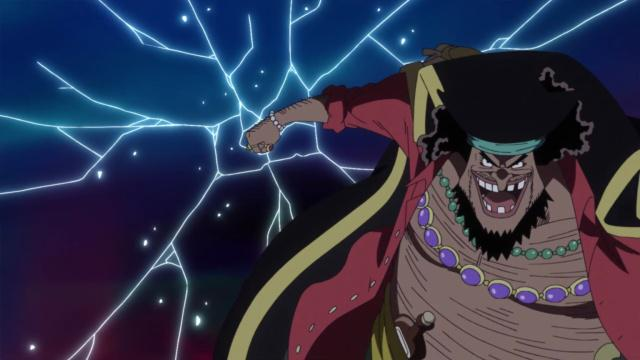

特徵是一頭紅色的頭髮，以及左眼由「黑鬍子」馬歇爾·D·汀奇在約距今十幾年前所造成的三道傷痕，性格豪爽，為人隨和，喜歡惡作劇，凡事都向前看，樂觀程度極度嚴重，但是絕不允許自己的夥伴被任何人傷害。喜歡到處開派對，極愛喝酒，重視程度僅次於夥伴。

黑鬍子海賊團提督、前任「王下七武海」之一。在第二部已擁有「四皇」稱號。皮膚和頭髮顏色都是黑色，嘴裡有掉幾顆牙齒，是個粗獷的中年男子，獨特笑聲是「賊哈哈哈哈」。武器為好幾把插在腰上的燧發手槍。個性自大、輕率，擁有追尋夢想的心，卻是個為了實現自己夢想，可以不擇手段的野心人物。相當有耐心的隱藏自己實力與野心，但只要被他抓到了機會就是個讓世界懼怕的存在。
BIG MOM
戰鬥型態